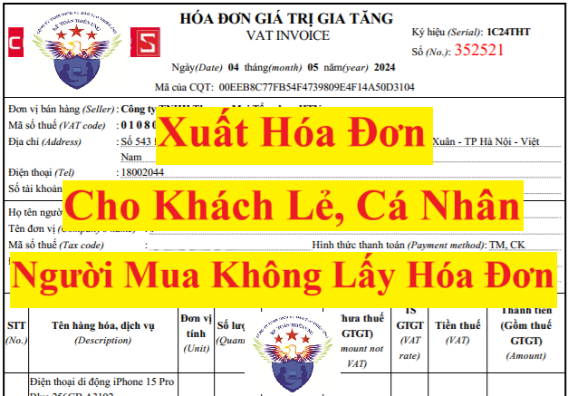

Hướng dẫn cách xuất hóa đơn điện tử cho khách lẻ, cá nhân, người mua không lấy hóa đơn theo nghị định 70/2025/NĐ-CP có hiệu lực từ ngày 01/06/20525 (sửa đổi nghị định 123/2020/NĐ-CP)
Theo khoản 1 Điều 90 Luật quản lý thuế số 38/2019/QH14 quy định về nguyên tắc lập, quản lý, sử dụng hóa đơn điện tử thì:
1. Khi bán hàng hóa, cung cấp dịch vụ, người bán phải lập hóa đơn điện tử để giao cho người mua theo định dạng chuẩn dữ liệu và phải ghi đầy đủ nội dung theo quy định của pháp luật về thuế, pháp luật về kế toán, không phân biệt giá trị từng lần bán hàng hóa, cung cấp dịch vụ.
Còn chi tiết về cách lập hóa đơn điện tử cho khách lẻ, cá nhân theo quy định tại từng giai đoạn như sau:
1. Giai đoạn từ ngày 01/06/2025 trở đi: Sẽ thực hiện theo quy định tại Nghị định 70/2025/NĐ-CP sửa đổi Nghị định 123/2020/NĐ-CP quy định về hóa đơn, chứng từ như sau:
Theo Điểm a Khoản 3 Điều 1 Nghị định 70/2025/NĐ-CP có hiệu lực từ ngày 01/06/2025 thì:
1. Khi bán hàng hóa, cung cấp dịch vụ, người bán phải lập hóa đơn để giao cho người mua (bao gồm cả các trường hợp hàng hóa, dịch vụ dùng để khuyến mại, quảng cáo, hàng mẫu; hàng hóa, dịch vụ dùng để cho, biếu, tặng, trao đổi, trả thay lương cho người lao động và tiêu dùng nội bộ (trừ hàng hóa luân chuyển nội bộ để tiếp tục quá trình sản xuất); xuất hàng hóa dưới các hình thức cho vay, cho mượn hoặc hoàn trả hàng hóa) và các trường hợp lập hóa đơn theo quy định tại Điều 19 Nghị định này. Hóa đơn phải ghi đầy đủ nội dung theo quy định tại Điều 10 Nghị định này. Trường hợp sử dụng hóa đơn điện tử phải theo định dạng chuẩn dữ liệu của cơ quan thuế theo quy định tại Điều 12 Nghị định này.
Vậy là: Khi bán hàng hóa, cung cấp dịch vụ thì người bán phải lập hóa đơn để giao cho người mua.
Kể cả trường hợp: người mua là cá nhân, khách lẻ hoặc người mua không lấy hóa đơn thì người bán vẫn phải xuất hóa đơn và trên hóa đơn phải có đầy đủ thông tin theo quy định
Thông tin ghi trên hóa đơn được quy định như sau:
Kế Toán Diệu Tâm mời các bạn tham khảo và cập nhật thêm nội dung: Thời điểm xuất hóa đơn theo Nghị Định 70 2025
Theo Điểm a Khoản 7 Điều 1 Nghị định 70/2025/NĐ-CP có hiệu lực từ ngày 01/06/2025 thì:
5. Tên, địa chỉ, mã số thuế hoặc mã số đơn vị có quan hệ với ngân sách hoặc số định danh cá nhân của người mua
a) Trường hợp người mua là cơ sở kinh doanh có mã số thuế thì tên, địa chỉ, mã số thuế của người mua thể hiện trên hóa đơn phải ghi theo đúng tại giấy chứng nhận đăng ký doanh nghiệp, giấy chứng nhận đăng ký hoạt động chi nhánh, giấy chứng nhận đăng ký hộ kinh doanh, giấy chứng nhận đăng ký thuế, thông báo mã số thuế, giấy chứng nhận đăng ký đầu tư, giấy chứng nhận đăng ký hợp tác xã; trường hợp người mua là đơn vị có quan hệ ngân sách thì tên, địa chỉ, mã số đơn vị có quan hệ ngân sách thể hiện trên hóa đơn phải ghi mã số đơn vị có quan hệ với ngân sách được cấp.
Trường hợp tên, địa chỉ người mua quá dài, trên hóa đơn người bán được viết ngắn gọn một số danh từ thông dụng như: “Phường” thành “P”; “Quận” thành “Q”, “Thành phố” thành “TP”, “Việt Nam” thành “VN” hoặc “Cổ phần” là “CP”, “Trách nhiệm hữu hạn” thành “TNHH”, “khu công nghiệp” thành “KCN”, “sản xuất” thành “SX”, “Chi nhánh” thành “CN”... nhưng phải đảm bảo đầy đủ số nhà, tên đường phố, phường, xã, quận, huyện, thành phố, xác định được chính xác tên, địa chỉ doanh nghiệp và phù hợp với đăng ký kinh doanh, đăng ký thuế của doanh nghiệp.
b) Trường hợp người mua không có mã số thuế thì trên hóa đơn không phải thể hiện mã số thuế người mua. Một số trường hợp bán hàng hóa, cung cấp dịch vụ đặc thù cho người tiêu dùng là cá nhân quy định tại khoản 14 Điều này thì trên hóa đơn không phải thể hiện tên, địa chỉ người mua. Trường hợp bán hàng hóa, cung cấp dịch vụ cho khách hàng nước ngoài đến Việt Nam thì thông tin về địa chỉ người mua có thể được thay bằng thông tin về số hộ chiếu hoặc giấy tờ xuất nhập cảnh và quốc tịch của khách hàng nước ngoài. Trường hợp người mua cung cấp mã số thuế, số định danh cá nhân thì trên hóa đơn phải thể hiện mã số thuế, số định danh cá nhân.
Theo điều 14 của Nghị định số 123/2020/NĐ-CP và Điểm d Khoản 7 Điều 1 Nghị định 70/2025/NĐ-CP Sửa đổi, bổ sung điều 14 của Nghị định số 123/2020/NĐ-CP có hiệu lực từ ngày 01/06/2025 thì:
14. Một số trường hợp hóa đơn điện tử không nhất thiết có đầy đủ các nội dung
a) Trên hóa đơn điện tử không nhất thiết phải có chữ ký điện tử của người mua (bao gồm cả trường hợp lập hóa đơn điện tử khi bán hàng hóa, cung cấp dịch vụ cho khách hàng ở nước ngoài). Trường hợp người mua là cơ sở kinh doanh và người mua, người bán có thỏa thuận về việc người mua đáp ứng các điều kiện kỹ thuật để ký số, ký điện tử trên hóa đơn điện tử do người bán lập thì hóa đơn điện tử có chữ ký số, ký điện tử của người bán và người mua theo thỏa thuận giữa hai bên.
b) Đối với hóa đơn điện tử của cơ quan thuế cấp theo từng lần phát sinh không nhất thiết phải có chữ ký số của người bán, người mua.
c) Đối với hóa đơn điện tử bán hàng tại siêu thị, trung tâm thương mại mà người mua là cá nhân không kinh doanh thì trên hóa đơn không nhất thiết phải có tên, địa chỉ, mã số thuế người mua, chữ ký số của người mua.
Đối với hóa đơn điện tử bán xăng dầu cho khách hàng là cá nhân không kinh doanh thì không nhất thiết phải có các chỉ tiêu: Tên, địa chỉ, mã số thuế của người mua, chữ ký số của người mua.
d) Đối với hóa đơn điện tử là tem, vé, thẻ thì trên hóa đơn không nhất thiết phải có chữ ký số của người bán (trừ trường hợp tem, vé, thẻ là hóa đơn điện tử do cơ quan thuế cấp mã), tiêu thức người mua (tên, địa chỉ, mã số thuế), tiền thuế, thuế suất thuế giá trị gia tăng. Trường hợp tem, vé, thẻ điện tử có sẵn mệnh giá thì không nhất thiết phải có tiêu thức đơn vị tính, số lượng, đơn giá.
đ) Đối với chứng từ điện tử dịch vụ vận tải hàng không xuất qua website và hệ thống thương mại điện tử được lập theo thông lệ quốc tế cho người mua là cá nhân không kinh doanh được xác định là hóa đơn điện tử thì trên hóa đơn không nhất thiết phải có ký hiệu hóa đơn, ký hiệu mẫu hóa đơn, số thứ tự hóa đơn, thuế suất thuế giá trị gia tăng, mã số thuế, địa chỉ người mua, chữ ký số của người bán.
Trường hợp tổ chức kinh doanh hoặc tổ chức không kinh doanh mua dịch vụ vận tải hàng không thì chứng từ điện tử dịch vụ vận tải hàng không xuất qua website và hệ thống thương mại điện tử được lập theo thông lệ quốc tế cho các cá nhân của tổ chức kinh doanh, cá nhân của tổ chức không kinh doanh thì không được xác định là hóa đơn điện tử. Doanh nghiệp kinh doanh dịch vụ vận tải hàng không phải lập hóa đơn điện tử có đầy đủ các nội dung theo quy định giao cho tổ chức có cá nhân sử dụng dịch vụ vận tải hàng không.
e) Đối với hóa đơn của hoạt động xây dựng, lắp đặt; hoạt động xây nhà để bán có thu tiền theo tiến độ theo hợp đồng thì trên hóa đơn không nhất thiết phải có đơn vị tính, số lượng, đơn giá.
g) Đối với Phiếu xuất kho kiêm vận chuyển nội bộ thì trên Phiếu xuất kho kiêm vận chuyển nội bộ thể hiện các thông tin liên quan lệnh điều động nội bộ, người nhận hàng, người xuất hàng, địa điểm kho xuất, địa điểm nhận hàng, phương tiện vận chuyển. Cụ thể: tên người mua thể hiện người nhận hàng, địa chỉ người mua thể hiện địa điểm kho nhận hàng; tên người bán thể hiện người xuất hàng, địa chỉ người bán thể hiện địa điểm kho xuất hàng và phương tiện vận chuyển; không thể hiện tiền thuế, thuế suất, tổng số tiền thanh toán.
Đối với Phiếu xuất kho hàng gửi bán đại lý thì trên Phiếu xuất kho hàng gửi bán đại lý thể hiện các thông tin như hợp đồng kinh tế, người vận chuyển, phương tiện vận chuyển, địa điểm kho xuất, địa điểm kho nhận, tên sản phẩm hàng hóa, đơn vị tính, số lượng, đơn giá, thành tiền. Cụ thể: ghi số, ngày tháng năm hợp đồng kinh tế ký giữa tổ chức, cá nhân; họ tên người vận chuyển, hợp đồng vận chuyển (nếu có), địa chỉ người bán thể hiện địa điểm kho xuất hàng.
h) Hóa đơn sử dụng cho thanh toán Interline giữa các hãng hàng không được lập theo quy định của Hiệp hội vận tải hàng không quốc tế thì trên hóa đơn không nhất thiết phải có các chỉ tiêu: ký hiệu hóa đơn, ký hiệu mẫu hóa đơn, tên địa chỉ, mã số thuế của người mua, chữ ký số của người mua, đơn vị tính, số lượng, đơn giá.
i) Hóa đơn doanh nghiệp vận chuyển hàng không xuất cho đại lý là hóa đơn xuất ra theo báo cáo đã đối chiếu giữa hai bên và theo bảng kê tổng hợp thì trên hóa đơn không nhất thiết phải có đơn giá.
k) Đối với hoạt động xây dựng, lắp đặt, sản xuất, cung cấp sản phẩm, dịch vụ của doanh nghiệp quốc phòng an ninh phục vụ hoạt động quốc phòng an ninh theo quy định của Chính phủ thì trên hóa đơn không nhất thiết phải có đơn vị tính; số lượng; đơn giá; phần tên hàng hóa, dịch vụ ghi cung cấp hàng hóa, dịch vụ theo hợp đồng ký kết giữa các bên.
l) Đối với hóa đơn điện tử hoạt động kinh doanh casino, trò chơi điện tử có thưởng không nhất thiết phải có tên, địa chỉ, mã số thuế của người mua, chữ ký số của người mua.
Kế Toán Diệu Tâm mời các bạn tham khảo và cập nhật thêm nội dung: Thời điểm xuất hóa đơn theo Nghị Định 70 2025
2. Giai đoạn trước ngày 01/06/2025: Sẽ thực hiện theo quy định tại Nghị định 123/2020/NĐ-CP quy định về hóa đơn, chứng từ và thông tư 78/2021/TT-BTC như sau:
Theo quy định khoản 1 Điều 4 Nghị định 123/2020/NĐ-CP quy định về nguyên tắc lập, quản lý, sử dụng hóa đơn thì:
1. Khi bán hàng hóa, cung cấp dịch vụ, người bán phải lập hóa đơn để giao cho người mua (bao gồm cả các trường hợp hàng hóa, dịch vụ dùng để khuyến mại, quảng cáo, hàng mẫu; hàng hóa, dịch vụ dùng để cho, biếu, tặng, trao đổi, trả thay lương cho người lao động và tiêu dùng nội bộ (trừ hàng hóa luân chuyển nội bộ để tiếp tục quá trình sản xuất); xuất hàng hóa dưới các hình thức cho vay, cho mượn hoặc hoàn trả hàng hóa) và phải ghi đầy đủ nội dung theo quy định tại Điều 10 Nghị định này, trường hợp sử dụng hóa đơn điện tử thì phải theo định dạng chuẩn dữ liệu của cơ quan thuế theo quy định tại Điều 12 Nghị định này.
Vậy là: Khi bán hàng hóa, cung cấp dịch vụ thì người bán phải lập hóa đơn để giao cho người mua.
Kể cả trường hợp: người mua không lấy hóa đơn thì người bán vẫn phải xuất hóa đơn và trên hóa đơn phải có đầy đủ thông tin theo quy định tại Nghị định 123/2020/NĐ-CP.
Điều 24. Xử phạt hành vi vi phạm quy định về lập hóa đơn khi bán hàng hóa, dịch vụ
5. Phạt tiền từ 10.000.000 đồng đến 20.000.000 đồng đối với hành vi không lập hóa đơn khi bán hàng hóa, cung cấp dịch vụ cho người mua theo quy định, trừ hành vi quy định tại điểm b khoản 2 Điều này.
6. Biện pháp khắc phục hậu quả: Buộc lập hóa đơn theo quy định đối với hành vi quy định tại điểm d khoản 4, khoản 5 Điều này khi người mua có yêu cầu.
Theo quy định tại khoản 5, điều 10 của Nghị định 123/2020/NĐ-CP quy định về Nội dung của hóa đơn thì:
5. Tên, địa chỉ, mã số thuế của người mua
a) Trường hợp người mua là cơ sở kinh doanh có mã số thuế thì tên, địa chỉ, mã số thuế của người mua thể hiện trên hóa đơn phải ghi theo đúng tại giấy chứng nhận đăng ký doanh nghiệp, giấy chứng nhận đăng ký hoạt động chi nhánh, giấy chứng nhận đăng ký hộ kinh doanh, giấy chứng nhận đăng ký thuế, thông báo mã số thuế, giấy chứng nhận đăng ký đầu tư, giấy chứng nhận đăng ký hợp tác xã.
Trường hợp tên, địa chỉ người mua quá dài, trên hóa đơn người bán được viết ngắn gọn một số danh từ thông dụng như: "Phường" thành "P"; "Quận" thành "Q", "Thành phố" thành "TP", "Việt Nam" thành "VN" hoặc "Cổ phần" là "CP", "Trách nhiệm Hữu hạn" thành "TNHH", "khu công nghiệp" thành "KCN", "sản xuất" thành "SX", "Chi nhánh" thành "CN"… nhưng phải đảm bảo đầy đủ số nhà, tên đường phố, phường, xã, quận, huyện, thành phố, xác định được chính xác tên, địa chỉ doanh nghiệp và phù hợp với đăng ký kinh doanh, đăng ký thuế của doanh nghiệp.
b) Trường hợp người mua không có mã số thuế thì trên hóa đơn không phải thể hiện mã số thuế người mua. Một số trường hợp bán hàng hóa, cung cấp dịch vụ đặc thù cho người tiêu dùng là cá nhân quy định tại khoản 14 Điều này thì trên hóa đơn không phải thể hiện tên, địa chỉ người mua. Trường hợp bán hàng hóa, cung cấp dịch vụ cho khách hàng nước ngoài đến Việt Nam thì thông tin về địa chỉ người mua có thể được thay bằng thông tin về số hộ chiếu hoặc giấy tờ xuất nhập cảnh và quốc tịch của khách hàng nước ngoài.
Cụ thể về một số trường hợp bán hàng hóa, cung cấp dịch vụ đặc thù cho người tiêu dùng là cá nhân quy định tại khoản 14 Điều 10 của Nghị định 123/2020/NĐ-CP như sau:
14. Một số trường hợp hóa đơn điện tử không nhất thiết có đầy đủ các nội dung
a) Trên hóa đơn điện tử không nhất thiết phải có chữ ký điện tử của người mua (bao gồm cả trường hợp lập hóa đơn điện tử khi bán hàng hóa, cung cấp dịch vụ cho khách hàng ở nước ngoài). Trường hợp người mua là cơ sở kinh doanh và người mua, người bán có thỏa thuận về việc người mua đáp ứng các điều kiện kỹ thuật để ký số, ký điện tử trên hóa đơn điện tử do người bán lập thì hóa đơn điện tử có chữ ký số, ký điện tử của người bán và người mua theo thỏa thuận giữa hai bên.
b) Đối với hóa đơn điện tử của cơ quan thuế cấp theo từng lần phát sinh không nhất thiết phải có chữ ký số của người bán, người mua.
c) Đối với hóa đơn điện tử bán hàng tại siêu thị, trung tâm thương mại mà người mua là cá nhân không kinh doanh thì trên hóa đơn không nhất thiết phải có tên, địa chỉ, mã số thuế người mua.
Đối với hóa đơn điện tử bán xăng dầu cho khách hàng là cá nhân không kinh doanh thì không nhất thiết phải có các chỉ tiêu tên hóa đơn, ký hiệu mẫu số hóa đơn, ký hiệu hóa đơn, số hóa đơn; tên, địa chỉ, mã số thuế của người mua, chữ ký điện tử của người mua; chữ ký số, chữ ký điện tử của người bán, thuế suất thuế giá trị gia tăng.
d) Đối với hóa đơn điện tử là tem, vé, thẻ thì trên hóa đơn không nhất thiết phải có chữ ký số của người bán (trừ trường hợp tem, vé, thẻ là hóa đơn điện tử do cơ quan thuế cấp mã), tiêu thức người mua (tên, địa chỉ, mã số thuế), tiền thuế, thuế suất thuế giá trị gia tăng. Trường hợp tem, vé, thẻ điện tử có sẵn mệnh giá thì không nhất thiết phải có tiêu thức đơn vị tính, số lượng, đơn giá.
đ) Đối với chứng từ điện tử dịch vụ vận tải hàng không xuất qua website và hệ thống thương mại điện tử được lập theo thông lệ quốc tế cho người mua là cá nhân không kinh doanh được xác định là hóa đơn điện tử thì trên hóa đơn không nhất thiết phải có ký hiệu hóa đơn, ký hiệu mẫu hóa đơn, số thứ tự hóa đơn, thuế suất thuế giá trị gia tăng, mã số thuế, địa chỉ người mua, chữ ký số của người bán.
Trường hợp tổ chức kinh doanh hoặc tổ chức không kinh doanh mua dịch vụ vận tải hàng không thì chứng từ điện tử dịch vụ vận tải hàng không xuất qua website và hệ thống thương mại điện tử được lập theo thông lệ quốc tế cho các cá nhân của tổ chức kinh doanh, cá nhân của tổ chức không kinh doanh thì không được xác định là hóa đơn điện tử. Doanh nghiệp kinh doanh dịch vụ vận tải hàng không phải lập hóa đơn điện tử có đầy đủ các nội dung theo quy định giao cho tổ chức có cá nhân sử dụng dịch vụ vận tải hàng không.
e) Đối với hóa đơn của hoạt động xây dựng, lắp đặt; hoạt động xây nhà để bán có thu tiền theo tiến độ theo hợp đồng thì trên hóa đơn không nhất thiết phải có đơn vị tính, số lượng, đơn giá.
g) Đối với Phiếu xuất kho kiêm vận chuyển nội bộ thì trên Phiếu xuất kho kiêm vận chuyển nội bộ thể hiện các thông tin liên quan lệnh điều động nội bộ, người nhận hàng, người xuất hàng, địa điểm kho xuất, địa điểm nhận hàng, phương tiện vận chuyển. Cụ thể: tên người mua thể hiện người nhận hàng, địa chỉ người mua thể hiện địa điểm kho nhận hàng; tên người bán thể hiện người xuất hàng, địa chỉ người bán thể hiện địa điểm kho xuất hàng và phương tiện vận chuyển; không thể hiện tiền thuế, thuế suất, tổng số tiền thanh toán.
Đối với Phiếu xuất kho hàng gửi bán đại lý thì trên Phiếu xuất kho hàng gửi bán đại lý thể hiện các thông tin như hợp đồng kinh tế, người vận chuyển, phương tiện vận chuyển, địa điểm kho xuất, địa điểm kho nhận, tên sản phẩm hàng hóa, đơn vị tính, số lượng, đơn giá, thành tiền. Cụ thể: ghi số, ngày tháng năm hợp đồng kinh tế ký giữa tổ chức, cá nhân; họ tên người vận chuyển, hợp đồng vận chuyển (nếu có), địa chỉ người bán thể hiện địa điểm kho xuất hàng.
h) Hóa đơn sử dụng cho thanh toán Interline giữa các hãng hàng không được lập theo quy định của Hiệp hội vận tải hàng không quốc tế thì trên hóa đơn không nhất thiết phải có các chỉ tiêu: ký hiệu hóa đơn, ký hiệu mẫu hóa đơn, tên địa chỉ, mã số thuế của người mua, chữ ký số của người mua, đơn vị tính, số lượng, đơn giá.
i) Hóa đơn doanh nghiệp vận chuyển hàng không xuất cho đại lý là hóa đơn xuất ra theo báo cáo đã đối chiếu giữa hai bên và theo bảng kê tổng hợp thì trên hóa đơn không nhất thiết phải có đơn giá.
k) Đối với hoạt động xây dựng, lắp đặt, sản xuất, cung cấp sản phẩm, dịch vụ của doanh nghiệp quốc phòng an ninh phục vụ hoạt động quốc phòng an ninh theo quy định của Chính phủ thì trên hóa đơn không nhất thiết phải có đơn vị tính; số lượng; đơn giá; phần tên hàng hóa, dịch vụ ghi cung cấp hàng hóa, dịch vụ theo hợp đồng ký kết giữa các bên.
Công ty đào tạo Kế Toán Diệu Tâm mời các bạn có thể tham khảo thêm một số các công văn hướng dẫn cách xuất hóa đơn điện tử cho khách lẻ, cá nhân, người mua không lấy hóa đơn theo nghị định 123/2020/NĐ-CP và thông tư 78/2021/TT-BTC
1. Công văn số 157/CCTKV.XVII-QLDN1 ngày 28/3/2025 của Chi cục thuế khu vực XVII về xuất hóa đơn giá trị gia tăng (GTGT) cho người mua là cá nhân
Trả lời văn bản số 01/CV-2025 ngày 05/03/2025 của Công ty TNHH Thái Dương VN (sau đây gọi tắt là Công ty) về việc xuất hóa đơn GTGT cho người mua là cá nhân. Chi cục Thuế có ý kiến như sau: + Tại khoản 1 Điều 4 nguyên tắc lập, quản lý, sủ dụng hóa đơn, chứng từ: ““Điều 4. Nguyên tắc lập, quản lý, sử dụng hóa đơn, chứng từ 1. Khi bán hàng hóa, cung cấp dịch vụ, người bán phải lập hóa đơn để giao cho người mua (bao gồm cả các trường hợp hàng hóa, dịch vụ dùng để khuyến mại, quảng cáo, hàng mẫu; hàng hóa, dịch vụ dùng để cho, biếu, tặng, trao đổi, trả thay lương cho người lao động và tiêu dùng nội bộ (trừ hàng hóa luân chuyển nội bộ để tiếp tục quá trình sản xuất); xuất hàng hóa dưới các hình thức cho vay, cho mượn hoặc hoàn trả hàng hóa) và phải ghi đầy đủ nội dung theo quy định tại Điều 10 Nghị định này, trường hợp sử dụng hóa đơn điện tử thì phải theo định dạng chuẩn dữ liệu của cơ quan thuế theo quy định tại Điều 12 Nghị định này. …” + Tại khoản 5 Điều 10 quy định nội dung của hóa đơn “Điều 10. Nội dung của hóa đơn … 5. Tên, địa chỉ, mã số thuế của người mua a)a) Trường hợp người mua là cơ sở kinh doanh có mã số thuế thì tên, địa chỉ, mã số thuế của người mua thể hiện trên hóa đơn phải ghi theo đúng tại giấy chứng nhận đăng ký doanh nghiệp, giấy chứng nhận đăng ký hoạt động chi nhánh, giấy chứng nhận đăng ký hộ kinh doanh, giấy chứng nhận đăng ký thuế, thông báo mã số thuế, giấy chứng nhận đăng ký đầu tư, giấy chứng nhận đăng ký hợp tác xã. b) Trường hợp người mua không có mã số thuế thì trên hóa đơn không phải thể hiện mã số thuế người mua. Một số trường hợp bán hàng hóa, cung cấp dịch vụ đặc thù cho người tiêu dùng là cá nhân quy định tại khoản 14 Điều này thì trên hóa đơn không phải thể hiện tên, địa chỉ người mua. Trường hợp bán hàng hóa, cung cấp dịch vụ cho khách hàng nước ngoài đến Việt Nam thì thông tin về địa chỉ người mua có thể được thay bằng thông tin về số hộ chiếu hoặc giấy tờ xuất nhập cảnh và quốc tịch của khách hàng nước ngoài. …” + Tại Điều 19 xử lý hóa đơn có sai sót quy định như sau: “Điều 19. Xử lý hóa đơn có sai sót 1. Trường hợp người bán phát hiện hóa đơn điện tử đã được cấp mã của cơ quan thuế chưa gửi cho người mua có sai sót thì người bán thực hiện thông báo với cơ quan thuế theo Mau số 04/SS-HĐĐT Phụ lục IA ban hành kèm theo Nghị định này về việc hủy hóa đơn điện tử có mã đã lập có sai sót và lập hóa đơn điện tử mới, ký số gửi cơ quan thuế để cấp mã hóa đơn mới thay thế hóa đơn đã lập để gửi cho người mua. Cơ quan thuế thực hiện hủy hóa đơn điện tử đã được cấp mã có sai sót lưu trên hệ thống của cơ quan thuế. 2. Trường hợp hóa đơn điện tử có mã của cơ quan thuế hoặc hóa đơn điện tử không có mã của cơ quan thuế đã gửi cho người mua mà người mua hoặc người bán phát hiện có sai sót thì xử lý như sau: … b)b) Trường hợp có sai: mã số thuế; sai sót về số tiền ghi trên hóa đơn, sai về thuế suất, tiền thuế hoặc hàng hóa ghi trên hóa đơn không đúng quy cách, chất lượng thì có thể lựa chọn một trong hai cách sử dụng hóa đơn điện tử như sau: b1) Người bán lập hóa đơn điện tử điều chỉnh hóa đơn đã lập có sai sót. Trường hợp người bán và người mua có thỏa thuận về việc lập văn bản thỏa thuận trước khi lập hóa đơn điều chỉnh cho hóa đơn đã lập có sai sót thì người bán và người mua lập văn bản thỏa thuận ghi rõ sai sót, sau đó người bán lập hóa đơn điện tử điều chỉnh hóa đơn đã lập có sai sót. Hóa đơn điện tử điều chỉnh hóa đơn điện tử đã lập có sai sót phải có dòng chữ “Điều chỉnh cho hóa đơn Mau số... ký hiệu... số... ngày... tháng... năm”. b2) Người bán lập hóa đơn điện tử mới thay thế cho hóa đơn điện tử có sai sót trừ trường hợp người bán và người mua có thỏa thuận về việc lập văn bản thỏa thuận trước khi lập hóa đơn thay thế cho hóa đơn đã lập có sai sót thì người bán và người mua lập văn bản thỏa thuận ghi rõ sai sót, sau đó người bán lập hóa đơn điện tử thay thế hóa đơn đã lập có sai sót. Hóa đơn điện tử mới thay thế hóa đơn điện tử đã lập có sai sót phải có dòng chữ “Thay thế cho hóa đơn Mau số... ký hiệu... số... ngày... tháng... năm”. Người bán ký số trên hóa đơn điện tử mới điều chỉnh hoặc thay thế cho hóa đơn điện tử đã lập có sai sót sau đó người bán gửi cho người mua (đối với trường hợp sử dụng hóa đơn điện tử không có mã của cơ quan thuế) hoặc gửi cơ quan thuế để cơ quan thuế cấp mã cho hóa đơn điện tử mới để gửi cho người mua (đối với trường hợp sử dụng hóa đơn điện tử có mã của cơ quan thuế). …” Căn cứ các quy định nêu trên, trường hợp Công ty bán hàng cho người mua thì tên, địa chỉ, mã số thuế của người mua thể hiện trên hóa đơn thực hiện theo quy định tại Khoản 5 Điều 10 Thông tư số 123/2020/NĐ-CP của Chính phủ. Trường hợp Công ty phát hiện hóa đơn có sai sót thì thực hiện xử lý hóa đơn sai sót theo quy định tại Điều 19 Nghị định 123/2020/NĐ-CP của Chính phủ. Chi cục Thuế trả lời cho Công ty được biết và thực hiện theo đúng quy định tại văn bản quy phạm pháp luật đã được trích dẫn tại văn bản này./.
|
2. Công văn số 56824/CTHN-TTHT của cục thuế TP Hà Nội về việc xuất hóa đơn cho khách hàng không lấy hóa đơn
Trong thời gian từ ngày Nghị định số 123/2020/NĐ-CP ngày 19/10/2020) được ban hành đến ngày 30/6/2022, các Nghị định số 51/2010/NĐ-CP ngày 14/5/2010 và số 04/2014/NĐ-CP ngày 17/01/2014 của Chính phủ quy định về hóa đơn bán hàng hóa, cung ứng dịch vụ vẫn còn hiệu lực thi hành.
Trường hợp cơ quan Thuế chưa thông báo đến Chi nhánh Công ty thực hiện đăng ký hóa đơn điện tử theo Nghị định 123/2020/NĐ-CP thì Chi nhánh Công ty vẫn thực hiện sử dụng hóa đơn theo hướng dẫn tại Nghị định 51/2010/NĐ-CP và Thông tư số 32/2011/TT-BTC. Theo đó: Khi bán hàng hóa, dịch vụ từ 200.000 đồng trở lên mỗi lần, người mua không lấy hóa đơn hoặc không cung cấp tên, địa chỉ, mã số thuế (nếu có) thì Chi nhánh Công ty lập hóa đơn, nội dung ghi trên hóa đơn phải ghi đúng nội dung nghiệp vụ kinh tế phát sinh, ghi rõ “người mua không lấy hóa đơn” hoặc “người mua không cung cấp tên, địa chỉ, mã số thuế” theo quy định tại Khoản 7 Điều 3 Thông tư số 26/2015/TT-BTC ngày 27/02/2015 của Bộ Tài chính nêu trên.
Khi Chi nhánh Công ty được cơ quan Thuế thông báo chấp nhận đăng ký hóa đơn điện tử theo Nghị định 123/2020/NĐ-CP thì Chi nhánh Công ty thực hiện lập hóa đơn theo nguyên tắc quy định tại khoản 1 Điều 90 Luật quản lý thuế số 38/2019/QH14.
Căn cứ Nghị định số 123/2020/NĐ-CP ngày 19/10/2020 của Chính phủ quy định về hóa đơn, chứng từ:
+ Tại điểm g Khoản 4 Điều 9 quy định về thời điểm lập hóa đơn:
g) Đối với cơ sở kinh doanh thương mại bán lẻ, kinh doanh dịch vụ ăn uống theo mô hình hệ thống cửa hàng bán trực tiếp đến người tiêu dùng nhưng việc hạch toán toàn bộ hoạt động kinh doanh được thực hiện tại trụ sở chính (trụ sở chính trực tiếp ký hợp đồng mua, bán hàng hóa, dịch vụ; hóa đơn bán hàng hóa, dịch vụ từng cửa hàng xuất cho khách hàng xuất qua hệ thống máy tính tiền của từng cửa hàng đứng tên trụ sở chính), hệ thống máy tính tiền kết nối với máy tính chưa đáp ứng điều kiện kết nối chuyển dữ liệu với cơ quan thuế, từng giao dịch bán hàng hóa, cung cấp đồ ăn uống có in Phiếu tính tiền cho khách hàng, dữ liệu Phiếu tính tiền có lưu trên hệ thống và khách hàng không có nhu cầu nhận hóa đơn điện tử thì cuối ngày cơ sở kinh doanh căn cứ thông tin từ Phiếu tính tiền để tổng hợp lập hóa đơn điện tử cho các giao dịch bán hàng hóa, cung cấp đồ ăn uống trong ngày, trường hợp khách hàng yêu cầu lập hóa đơn điện tử thì cơ sở kinh doanh lập hóa đơn điện tử giao cho khách hàng.
Căn cứ các quy định nêu trên, trường hợp Công ty là cơ sở kinh doanh thương mại bán lẻ, việc hạch toán toàn bộ hoạt động kinh doanh được thực hiện tại trụ sở chính hệ thống máy tính tiền kết nối với máy tính chưa đáp ứng điều kiện kết nối chuyển dữ liệu với cơ quan thuế, từng giao dịch bán hàng hóa có in Phiếu tính tiền cho khách hàng, dữ liệu Phiếu tính tiền có lưu trên hệ thống thì cuối ngày Công ty căn cứ thông tin từ Phiếu tính tiền để tổng hợp lập hóa đơn điện tử cho các khách hàng không có nhu cầu nhận hóa đơn theo quy định tại điểm g Khoản 4 Điều 9 Nghị định số 123/2020/NĐ-CP nêu trên.
